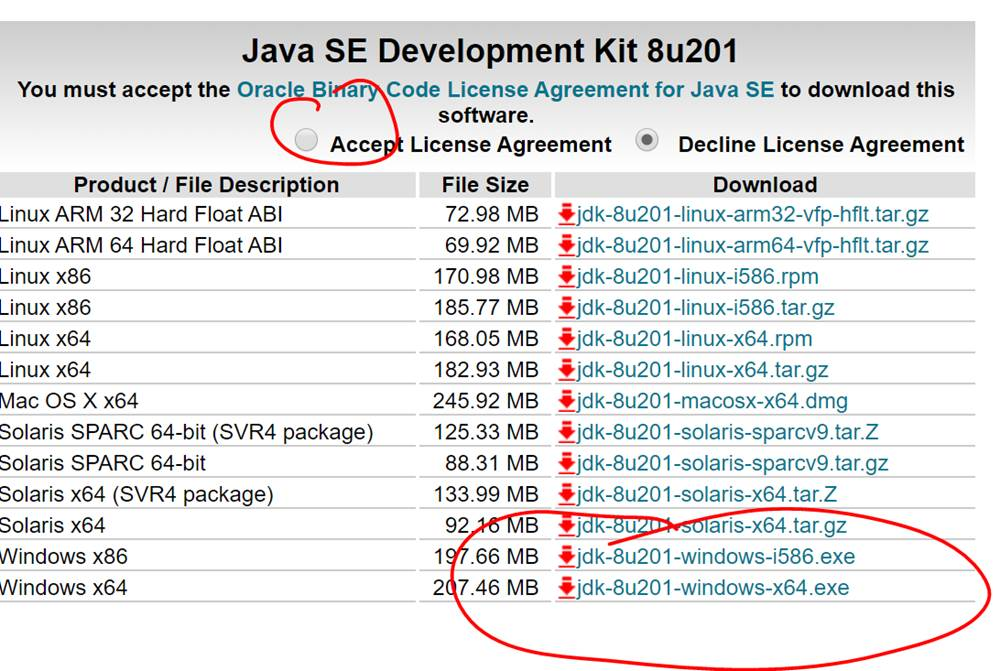

Discord (+ konto)
- Klikamy/otwieramy link na wybranym urządzeniu: skontaktuj się ze mną
- Instalujemy oprogramowanie dla urządzenia/używamy wewnątrz przeglądarki.
- Zakładamy konto/logujemy się i witamy z resztą na grupie eb-java
GitHub
Założyć konto i następnie umieścić jego nazwę lub adres email na który zostało założone na kanale discord „start”. Przed rozpoczęciem zadania drugiego będę musiał dodać wskazane konto do grupy na GitHub.
Java SDK + JRE 1.8
Java SE Development Kit 8 Downloads
 Akceptujemy licencje i pobieramy odpowiednią javę (preferujemy x64 jeśli mamy windows 64 bitowy). Instalator po zainstalowaniu SDK powinien zaproponować instalację JRE, na którą również wyrażamy zgodę.
{kind=link}
Eclipse
Pobieramy oraz instalujemy Eclipse IDE for Enterprise Java Developers

Git
Pobieramy oraz instalujemy Git: Download for Windows
Po instalacji proponuję od razu uruchomić  oraz wykonać 2 komendy (albo git sam się o nie upomni gdy będzie ich potrzebował).
oraz wykonać 2 komendy (albo git sam się o nie upomni gdy będzie ich potrzebował).
git config --global user.email "twoj@email.tutaj"
git config --global user.name "Twoja nazwa konta"
Opcjonalnie: Google translate w Chrome
Większość materiałów dodatkowych (stron WWW) będzie anglojęzyczna, współpracę może ułatwić wtyczka do chrome umożliwiająca szybkie przetłumaczenie fragmentu/strony. Proszę jedynie mieć na uwadze, że strony mogą (i pewnie często będą) zawierać kod/komendy w postaci tekstu, a nie obrazka i one również zostaną przetłumaczone razem z resztą strony i w związku z tym będą błędne.
google-translate
Po instalacji klikamy prawym na wtyczkę, wybieramy opcje i zmieniamy język tłumaczenia na Polski.